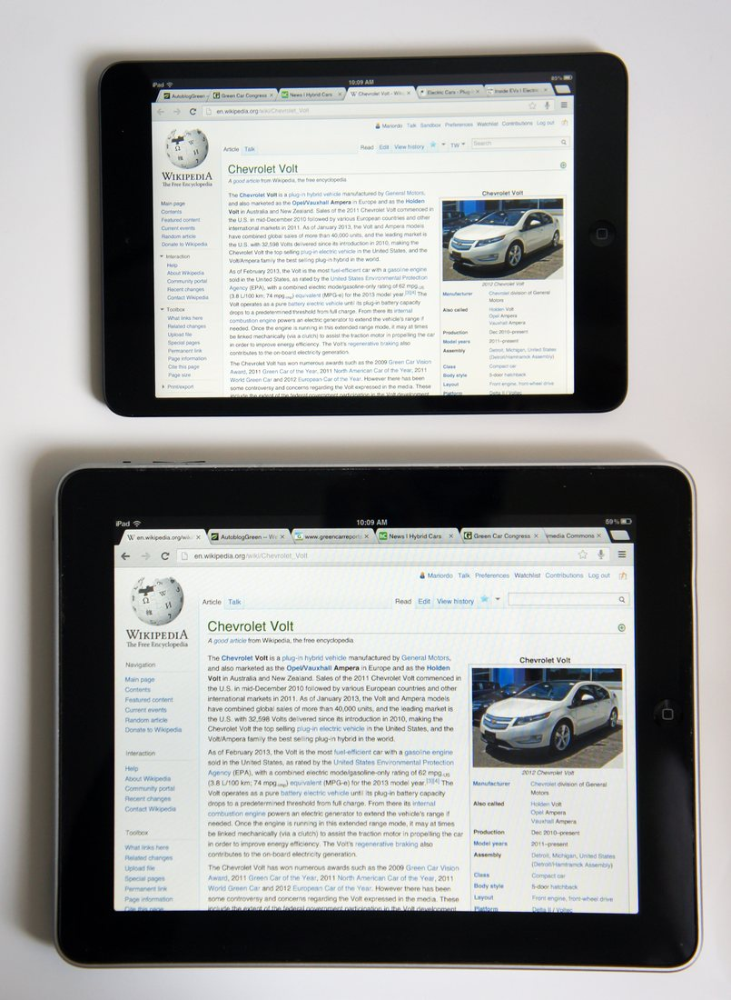

The Autopsy Report · Device #072
The iPad mini (1st generation)
Apple shrank the iPad to 7.9 inches and sold it for $329 — and the inside turned out to be an iPad 2 wearing a tailored suit.
What is this thing?
The first-generation iPad mini is Apple's 7.9-inch tablet, announced on October 23, 2012 and released on November 2, 2012, starting at $329. Wikipedia It arrived the same day as the fourth-generation iPad, and it was Apple's answer to the wave of 7-inch tablets led by the Nexus 7 and the Kindle Fire.
Under the smaller glass, the hardware story is a familiar one: teardowns found the same Apple A5 processor as the iPad 2, a Samsung-made display, and design cues borrowed from the iPhone 5. AppleInsider
Not yet on our bench
This device is not on our bench. We don't own one, we haven't opened one, and we haven't powered one on. Everything on this page comes from public records: government filings, published teardowns by repair shops and journalists, and manufacturer documents. That's a legitimate way to learn a device's story — and it's also a limited one. There are no BareBoard photos, measurements, boot logs, or firmware notes here, because we haven't earned them yet.
When a unit of the iPad mini does reach our bench, this page gets a second edition: our own board photography, our own measurements, and whatever the device tells us when it wakes up. Until then, what follows is the public record, carefully sourced, with the gaps labeled as gaps.
A short history
- October 23, 2012Apple announces the iPad mini alongside the fourth-generation iPad. Wikipedia
- October 23, 2012The FCC grants the Wi-Fi model's equipment authorization (FCC ID BCGA1432) — the same day as the announcement. FCC filing
- November 2012Teardowns land within days of launch: AppleInsider, CRN, ZDNet, and EE Times all open one up and agree on the parts inside. AppleInsider · CRN · ZDNet · EE Times
- March 31, 2013The FCC filing's internal photos, external photos, and user manual become public after short-term confidentiality expires. FCC filing
- 2015Apple discontinues the original mini, ending its run as the entry-level iPad. Wikipedia
The outside
The mini is a 7.9-inch tablet with a 1024×768 display — the same resolution as the first two full-size iPads, packed into a smaller frame. Wikipedia The back is a single piece of aluminum, and the front keeps the classic home button with a front-facing camera above the screen.
Teardown coverage noted the family resemblance deliberately: AppleInsider's teardown summary describes Samsung display parts and design cues taken from the iPhone 5. AppleInsider It looks like a shrunken iPad 2 because, electrically, it nearly is one.

The board
Published teardowns describe a single main logic board dominated by the Apple A5 processor, with the Wi-Fi module, NAND flash, and power circuitry arranged around it. CRN The board sits under an aluminum rear shell with the display assembly glued and screwed over the top — the standard Apple tablet construction of the era.
The FCC's internal photos (public since March 2013) show the same single-board layout with shielded radio sections, matching what the teardown press photographed at launch. FCC filing We have not photographed the board ourselves; everything above is the public record.
Under the microscope: the chips
What's on the board, what each part does, and how sure we are — all from public teardown records, since we haven't seen the board ourselves. Likely means the public hardware record agrees on it. Confirmed is reserved for primary sources we could verify directly, like the government's own filing. Every row links somewhere you can read more.
| Chip | What it does | How we know | Dig deeper |
|---|---|---|---|
| Apple A5 | The main processor — the same dual-core chip as the iPad 2. | Likely Every launch teardown identifies it; the chip carries Apple’s own marking. | EE Times teardown |
| Hynix H2JTDG8UD2MBR 16 GB NAND |
Flash storage — where iOS and the user's data live when the power is off. | Likely Read off the board by teardown press. | CRN teardown |
| Murata 339S0171 | The Wi-Fi module — the radio board that talks to wireless networks. | Likely Identified by part number in teardowns. | ZDNet teardown |
| Broadcom BCM4334 | The Wi-Fi/Bluetooth combo chip inside (or alongside) the Murata module. | Likely Corroborated across teardown coverage of this model. | EE Times teardown |
| Apple 338S1116 audio codec |
Turns digital audio into the analog signal the speakers and headphone jack need. | Likely Apple-marked part; teardown sources attribute it to Cirrus Logic. | CRN teardown |
| Apple 338S1077 amplifiers |
Audio amplifiers driving the speakers. | Likely Identified in teardown chip lists for this model. | ZDNet teardown |
Not in the public chip lists: the exact power-management IC, the touchscreen controller, and the display driver. Apple never published datasheets for its custom-marked parts — that documentation gap is the industry's, not the research's.
The government's file on this device
The Wi-Fi model went through the FCC as BCGA1432, registered to Apple Inc. The original grants are dated October 23, 2012 — announcement day — with a later permissive change in December 2015. FCC filing Confirmed — these dates come straight from the government's filing index.
The filing lists 2.4 GHz Wi-Fi at up to 352 mW, several 5 GHz grants between roughly 38 and 325 mW, and Bluetooth at 7 or 17 mW depending on the application. FCC filing Internal photos, external photos, and the user manual were held under short-term confidentiality and became public on March 31, 2013.
What's missing: the schematics, block diagram, and operational description were never made public — Apple asked for confidentiality and the FCC agreed. Browse it yourself: filing page.
Debug and service modes
Apple publicly documents recovery mode for iPads that won't update or restore — the support article walks through connecting to a computer and restoring the device. Apple Support Below that sits DFU (Device Firmware Update) mode, a deeper restore state described in public repair references; it talks to the bootloader before iOS loads.
We have not put any iPad into either mode. They are listed here because the manufacturer documents one and the repair community documents the other — not because we've used them.
Our posture on all of the above: we describe what's publicly documented, and we don't go knocking. No device has been probed, reflashed, or opened on our bench — there is nothing here but reading.
What public records show
It's an iPad 2 in a smaller body. The A5 processor, the 1024×768 display resolution, and the iPhone-5 design language all point the same way: Apple shrank a proven design rather than inventing a new one. AppleInsider
The radios are modest. The FCC's power figures — 352 mW at 2.4 GHz — are ordinary for a tablet of this era; nothing in the filing suggests unusual transmit behavior. FCC filing
What we haven't done
- We have not opened an iPad mini, photographed its board, or measured anything on it.
- We have not captured a boot log or entered recovery/DFU mode on this model.
- We have not verified which NAND or RAM vendor a given unit carries — Apple sourced parts from multiple vendors.
By the numbers
- Model: iPad mini (1st generation), Wi-Fi Wikipedia
- FCC ID: BCGA1432 FCC filing
- Main chip: Apple A5 EE Times
- Display: 7.9 in, 1024×768 Wikipedia
- Storage: 16/32/64 GB (teardown unit: 16 GB Hynix NAND) Wikipedia CRN
- Released: November 2, 2012, from $329 Wikipedia
- Wireless: Wi-Fi a/b/g/n, Bluetooth 4.0 Wikipedia
Words to know
Every term this page uses, in plain English. No prior knowledge required.
- System on a chip (SoC)
- The whole computer — processor, graphics, and memory interfaces — on one piece of silicon. The A5 is Apple's.
- NAND flash
- The chip that holds the operating system and user data when the power is off.
- FCC ID
- The ID the FCC assigns to each approved wireless product. Punch it into fccid.io and the whole public filing comes up.
- Recovery mode
- A state Apple documents for restoring an iPad whose software won't boot — it reloads the OS from a computer.
- DFU mode
- Device Firmware Update: an even deeper restore state that talks to the bootloader before iOS loads.
- Short-term confidentiality
- A deal with the FCC: the company files photos and manuals, but the public can't see them for a set number of days.
Sources & confidence
- Chip identities: launch teardowns by AppleInsider, CRN, ZDNet, and EE Times, all November 2012. Well-corroborated across outlets — marked Likely, not Confirmed, because we haven't seen the board ourselves.
- FCC ID, grant dates, confidentiality dates, and transmit powers: the FCC filing index for BCGA1432 — a primary source. High confidence.
- Release date, price, and display specs: the device's encyclopedia entry, cross-checked against launch coverage. High confidence in the attribution.
- Anything not listed here is unknown until the bench says otherwise. We'll say so, out loud, when that's the case.